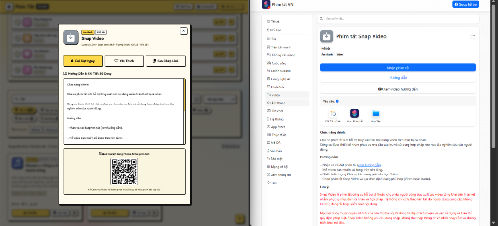

Hướng Dẫn Nhận Phím Tắt 1 Chạm Là Xong
Tài liệu hướng dẫn nhận và cài đặt Siri Shortcuts trên iPhone, iPad an toàn và nhanh nhất. Tích hợp so sánh trực quan giữa website Phím Tắt iPhone (VNT TRICKS) và nguồn Phim Tắt VN.
Để bạn dễ dàng hình dung quy trình nhận phím tắt, dưới đây là hình ảnh so sánh thực tế giữa giao diện website Phím Tắt iPhone (VNT TRICKS) và website đối tác nguồn Phim Tắt VN (phimtat.vn):

| Đặc Điểm | Phím Tắt iPhone (VNT TRICKS) | Nguồn Phim Tắt VN (phimtat.vn) |
|---|---|---|
| Nút Thao Tác | Nút "Cài Đặt Ngay" (Màu Vàng Retro) nổi bật, bấm là mở iCloud ngay. | Nút "Nhận phím tắt" (Màu Xanh Dương) ở đầu bài viết. |
| Tải Bằng Mã QR | Tích hợp sẵn mã QR Code tự động: Mở Camera iPhone quét trực tiếp trên màn hình máy tính để tải cực nhanh! | Cần truy cập trực tiếp bằng trình duyệt Safari trên iPhone. |
| Lưu Yêu Thích | Có nút "Yêu Thích ❤️" và lưu vào danh sách cá nhân trên trình duyệt. | Chức năng chia sẻ Facebook / Group hỗ trợ. |
| Kiểm Soát Trùng Lặp | Đã lọc sạch 100% phím tắt trùng nhau, dữ liệu cập nhật liên tục. | Kho bài viết phong phú theo danh mục WordPress. |
Chọn phím tắt cần cài đặt
Truy cập vào trang chủ Kho Phím Tắt iPhone hoặc Bảng Xếp Hạng TOP. Sử dụng ô tìm kiếm để gõ từ khóa phím tắt bạn cần (ví dụ: Snap Video, Loa ting ting, Lịch sử sao chép, Làm đẹp AI...).
Bấm "Cài Đặt" hoặc xem "Chi Tiết"
Bạn có thể bấm ngay nút "Cài Đặt" màu vàng để mở link iCloud, hoặc bấm nút "Chi Tiết" để mở popup bảng điều khiển có đầy đủ hướng dẫn sử dụng và mã QR.
Quét mã QR (Nếu duyệt bằng Máy tính / Laptop)
Nếu bạn đang đọc web trên máy tính: Mở ứng dụng Camera trên iPhone của bạn, hướng ống kính vào Mã QR Code hiển thị trong popup. Trên màn hình iPhone sẽ hiện thông báo "Mở trong Phím tắt", bạn chỉ cần chạm vào là xong!
Bấm "Thêm Phím Tắt" (Add Shortcut) trên iPhone
Ứng dụng Shortcuts chính chủ của Apple sẽ mở ra và hiển thị các lệnh bên trong. Bạn chỉ cần cuộn xuống dưới cùng và nhấn "Thêm phím tắt" (hoặc "Thiết lập phím tắt" nếu có hướng dẫn cấu hình). Phím tắt sẽ được lưu vĩnh viễn trên máy và đồng bộ iCloud.
Mở bài viết phím tắt trên phimtat.vn
Truy cập trực tiếp vào bài viết chi tiết tại website đối tác phimtat.vn bằng trình duyệt Safari trên iPhone.
Kiểm tra mục "Yêu cầu" trước khi tải
Kéo xuống xem phần Yêu cầu của phím tắt: Nếu phím tắt yêu cầu thêm ứng dụng phụ (như app Tệp (Files), Google Chrome, hoặc phiên bản iOS tối thiểu), bạn hãy chắc chắn máy đã cài đặt đủ các app này.
Nhấn nút "Nhận phím tắt" màu xanh
Bấm vào nút lớn màu xanh có chữ "Nhận phím tắt". iPhone sẽ hiển thị thông báo "Trang web này đang cố gắng mở Phím tắt...", bạn nhấn "Mở" (Open).
Nếu bạn nhấn nhận phím tắt trên Safari mà trang không chuyển tiếp sang ứng dụng Shortcuts: Hãy nhìn vào thanh địa chỉ Safari, bấm vào biểu tượng aA ở góc trái > Chọn "Ẩn trình đọc" (Hide Reader), sau đó bấm tải lại trang là sẽ nhận được bình thường!
- Máy chạy hệ điều hành iOS 15, iOS 16, iOS 17, iOS 18 hoặc mới hơn.
- Đã tải ứng dụng Phím tắt (Shortcuts) miễn phí từ App Store của Apple.
- Đã tải ứng dụng Tệp (Files) của Apple để lưu trữ ảnh/video xuất ra.
Cách bật "Cho phép phím tắt chưa tin cậy":
1. Mở ứng dụng Cài đặt (Settings) trên iPhone.
2. Cuộn xuống tìm và chọn mục Phím tắt (Shortcuts).
3. Gạt bật mục Cho phép phím tắt chưa được tin cậy (Allow Untrusted Shortcuts) hoặc cho phép chia sẻ cá nhân.
* Mẹo: Nếu bạn không thấy mục này xuất hiện, hãy mở app Phím tắt lên, chạy thử 1 phím tắt có sẵn bất kỳ trong Thư viện, rồi quay lại Cài đặt là mục này sẽ hiện ra ngay!